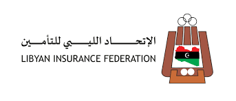

الوثيقة العربية الموحدة
بناء على الدعوة المقدمة من السيد رئيس مجلس إدارة الاتحاد الليبي لشركات التأمين الى السادة الأعضاء في الاتحاد عقد صباح اليوم الاثنين الموافق 2021/6/28 على تمام الساعة العاشرة صباحاً إجتماع الجمعية العمومية العادي الأول للاتحاد الليبي لشركات التأمين بمقر نقابة المعلمين بن عاشور - طرابلس وذلك لمناقشة بنود جدول الاعمال وإتخاذ القرارات اللازمة بشأنها , وبما يخدم قطاع التأمين المحلي .
شارك الاتحاد الليبي لشركات التأمين بفاعليات المؤتمر العربي للاكتواريين 2023 تحت شعار (العالم بعين اكتوارية ) الذي أنعقد في بجمهورية مصر العربية خلال الفترة 9-11/ مايو ، ومثل الاتحاد د. عادل عبدالعزيز سلطان – رئيس مجلس إدارة الاتحاد الليبي لشركات التأمين ، والاستاذ: علي الرقيعي – الأمين العام للاتحاد.
وشهد المؤتمر أكبر تجمع للخبراء والشركات الإكتوارية والتنفيذيين من قطاعات المصارف وشركات التأمين وإعادة التأمين وصناديق التقاعد وشركات إدارة الإستثمار والهيئات الحكومية المعنية ، وتحدث في المؤتمر 60 خبيرا ومختصا، وبحضور 750 مشاركا من مدراء وخبراء القطاعات المالية والتأمينية والأكاديمية ، وتناولت أجندة المؤتمر الدور الحيوي الذي يلعبه الخبير الاكتواري والدعم الذي يقدمه في بيئات أعمال مالية وتأمينية وحكومية متنوعة، من خلال 14 جلسة مقسمة على ستة محاور رئيسية.
ويهدف المؤتمر إلى بناء منصة حرفية منتظمة للصناعة الاكتوارية بالعالم العربي، على غرار المؤتمرات الاكتوارية الدولية والإقليمية، ودعم المساعي الرامية لتطوير القدرات الاكتوارية والطبيعة المتغيرة لدور الخبير الإكتواري في العصر الجديد للذكاء الاصطناعي والتعلم الآلي وعلوم البيانات.
عقد اجتماع تقابلي بين الضمانية للتأمين وشركة تبادل TBD للحلول البرمجية والمختصة في تطبيقات التأمين الصحي والرعاية الطبية.
ويأتي هذا الاجتماع في إطار سعي الضمانية للتأمين لتطوير خدمات التأمين الصحي وفق أحدث التطبيقات والنظم الحديثة ، مما يكفل تبسيط الاجراءات وسرعتها ورفع مستوى جودة الخدمة لكافة أطراف العلاقة بعمليات التأمين الصحي من مشتركين ومزودي خدمات طبية.
وقد تناول الاجتماع استعراض اهم الأساليب الحديثة والتطبيقات والأنظمة الرقمية المستخدمة لإدارة عمليات التأمين الصحي ، واوجه الاستفادة منها في أعمال الشركة.